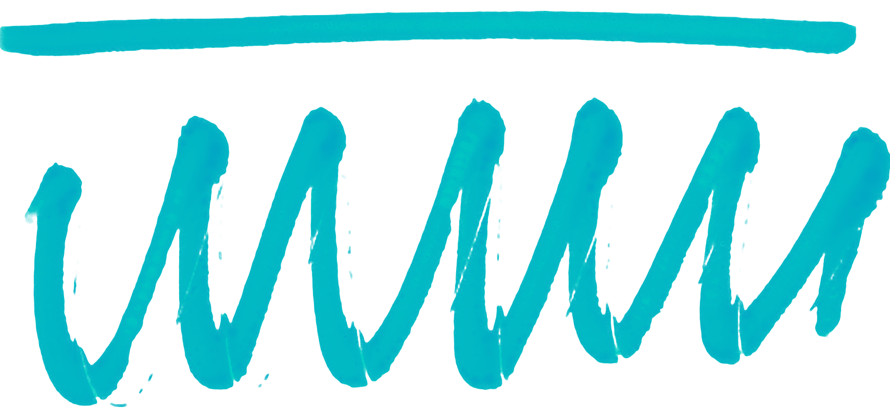
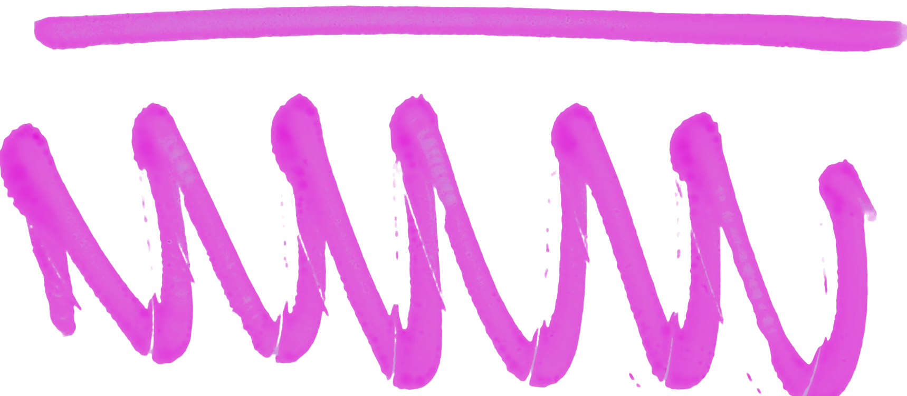
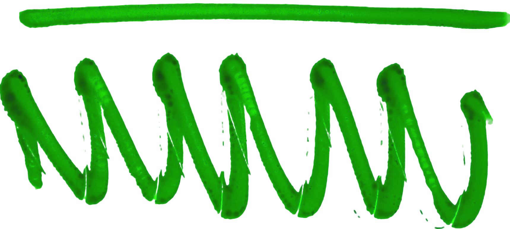

Резюме

Горелов Егор 14.08.1996

Обо мне
В свободное время я увлекаюсь игрой в D&D, изучением новых технологий и просмотром старых американских ситкомов. Также мне нравится смотреть зарубежный стендап, хотя иногда шутки могут оказаться не совсем в тему!
Увлечение в IT
В IT я попробовал разные языки программирования, чтобы найти тот,
который будет мне ближе. Сначала изучал C++, но, из-за недостатка опыта,
этот язык показался сложным. Позже, уже с двухлетним опытом работы в IT,
я занялся Kotlin и создал несколько простых приложений:
- Заметки для ДнД
- Лист персонажа для ДнД

Моя корьера
| Периуд | Компания | Должность | |
|---|---|---|---|
 |
2020-2023 | Криптософт | Тестировшик, Специалист по эксплуатации и внедрению |
 |
2023-н.в. | Цифровые решения | специалист ПреСейл, автотестировшик |
- Хард Скил
- Софт скил
Интересные проекты
